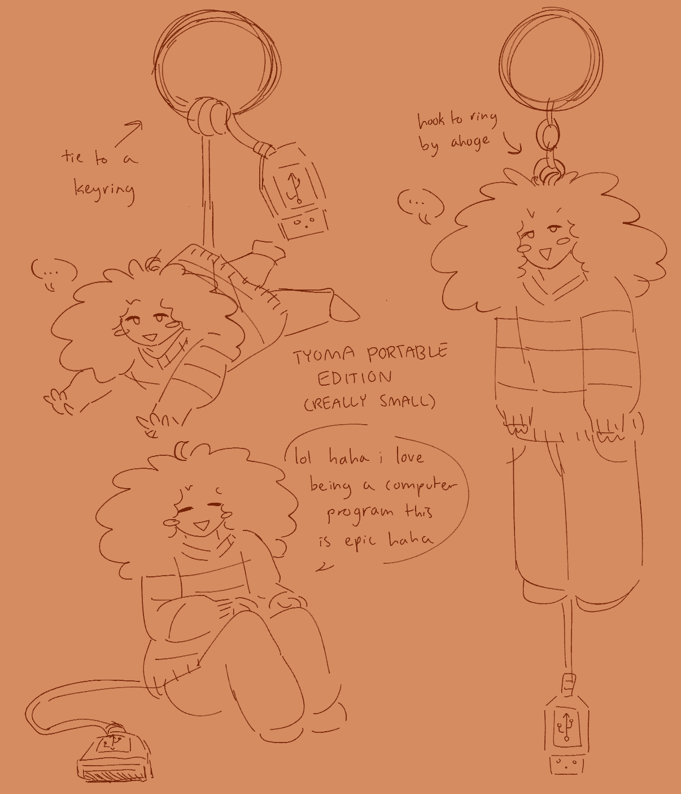
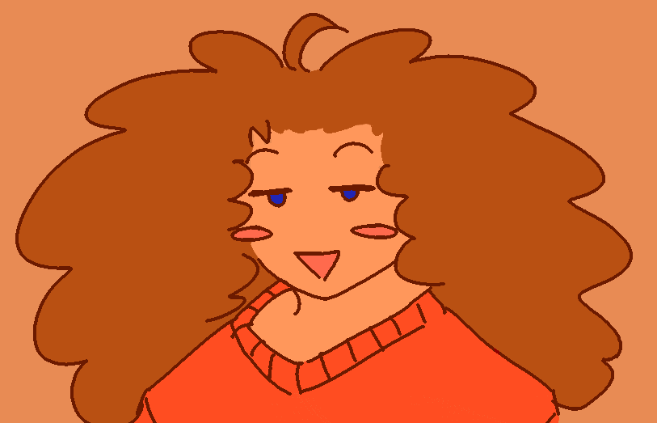
v1.02b - November 17 2021. Final build. Full outfit includes his favorite striped sweater and plain brown pants. Shapes are generally very round and compact. Given character traits representative of Tyoma's current shift in focus to the internet and external hardware. Now has a USB cable tail and RGB eyes. Now a mixture of humanoid, computer program, and external device (of varying sizes). Nose is optional.v1.02a - October 19 2021. Initial prototype. Similar in style to 1.01 but with warmer tones. New default outfit, nose added. New version representative of his more relaxed and focused mental state as well as recovery.
Version 1.01
v1.01b - April 6 2021. Experimental build preparing for v1.02. Design heavily simplified, removing hair detail entirely. Main goal is to create a gender-neutral design. Expressions are mostly a casual expression with a triangle shaped open smile, always including oval-shaped blush marks. Hands are blocky, hair is bumpy. Also you can tell he's starting to really like the color orange.v1.01a - November 28 2020. Initial prototype adding onto the initial Tyoma rework. Introduction of the red and black long-sleeved shirt, similar to how v1.0 only used red and black. Outfit is much more complex and based on real clothing. Retains 1.0's detailed design, giving more attention to the hair. Expression is tired, smile is more genuine rather than a sign of distress.
Version 1.0
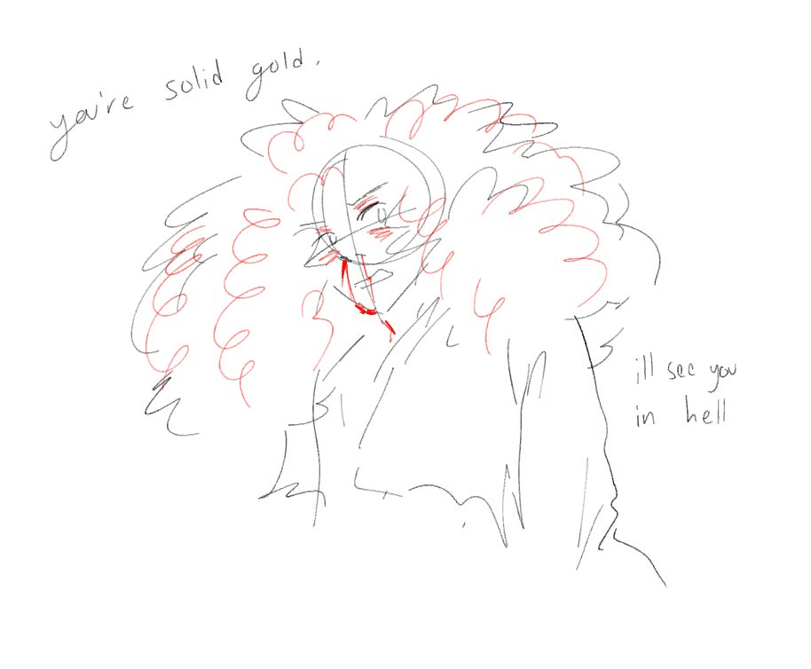
v1.0c - December 24 2020. Style is more consistent, lines are generally light, shapes are soft yet sharp. Sometimes stylized eyelashes are visible on lower eyelid. While the nosebleeds and emotional scenarios are still present, expressions are less hysterical and more grounded. Smiles are not present in images with negative themes. This version stayed around for a while even after v1.01 was released, but generally employed happier expressions nearing the end of its support.
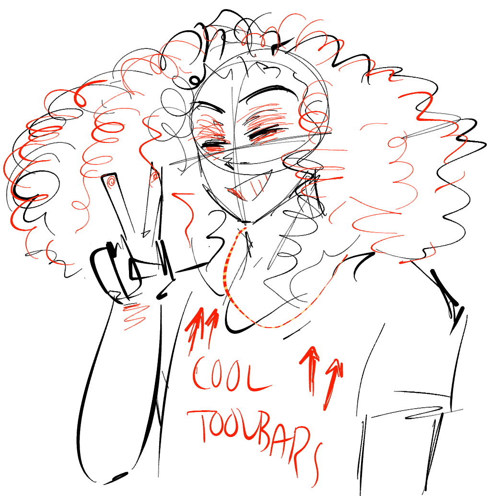
v1.0b - August 31 2020. More stylization is added, although proportions are still generally intact. Introduction of nosebleeds as a symbol of distress. Design heavily based on Tyoma's mental state. Note sketchiness, style inconsistency, and unsettled expressions. Generally only seen in emotionally-driven scenarios.
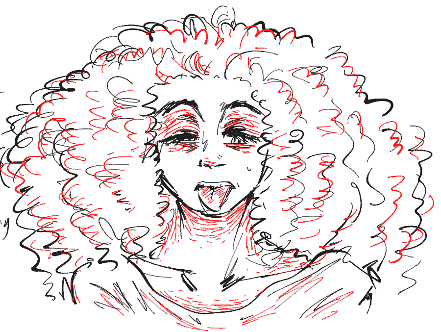
v1.0a - August 20 2020. Official Tyoma rework teaser. Lineart is black with red details, line weight varyies from light to medium. Style is semi-realistic or at least leaning in that direction. Red lines around eyes mandatory. Looks tired, worn out. Little to no clearly gendered traits.
 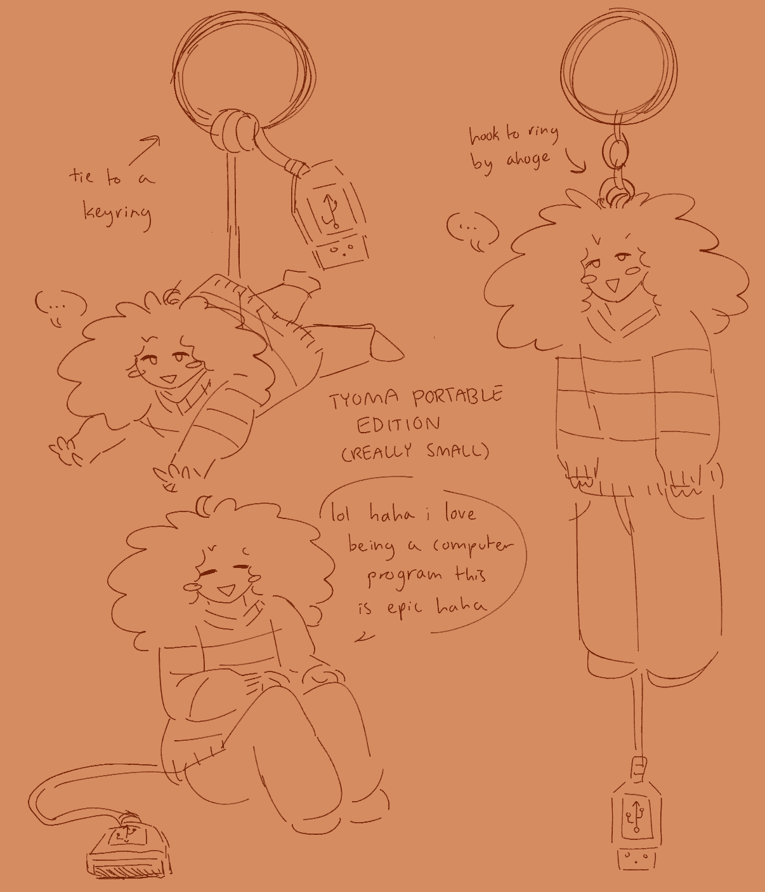
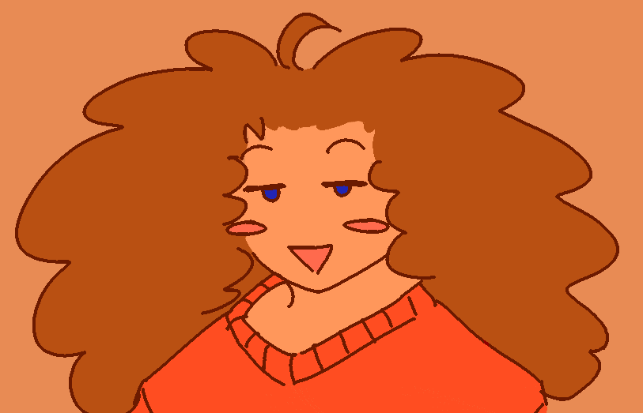
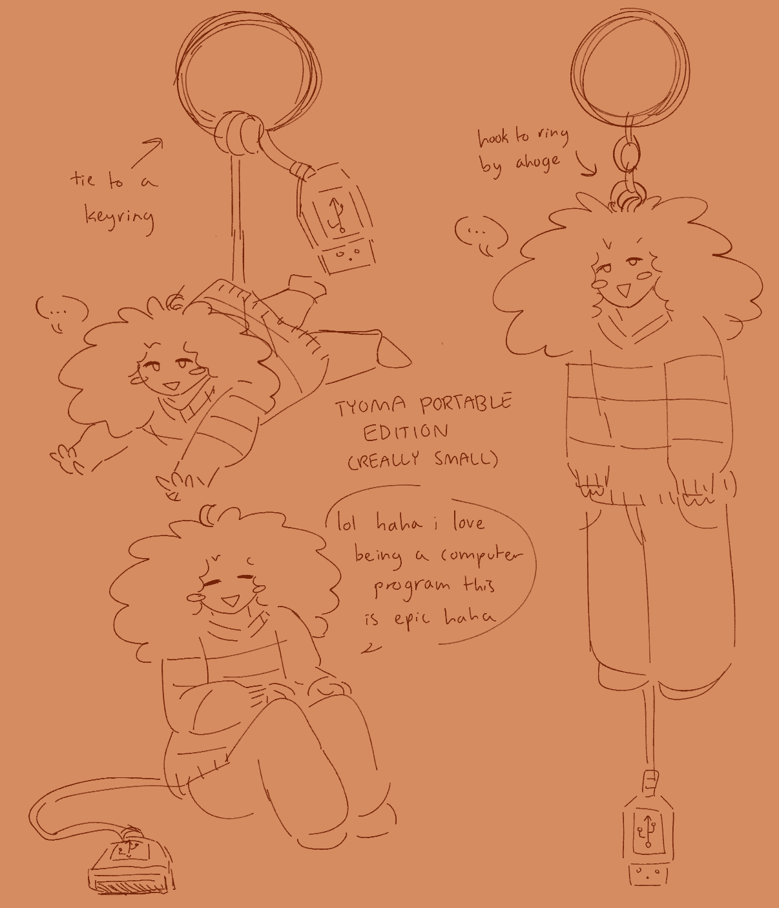
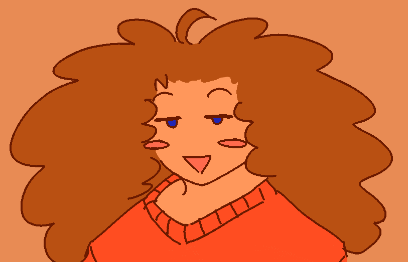


 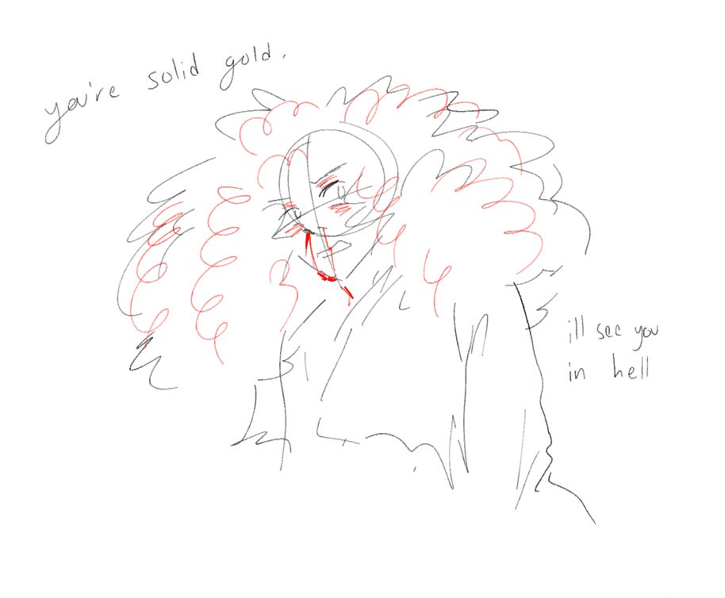
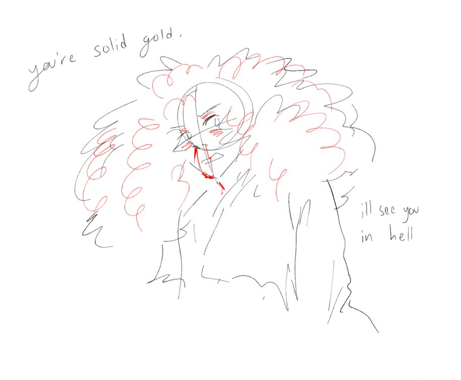